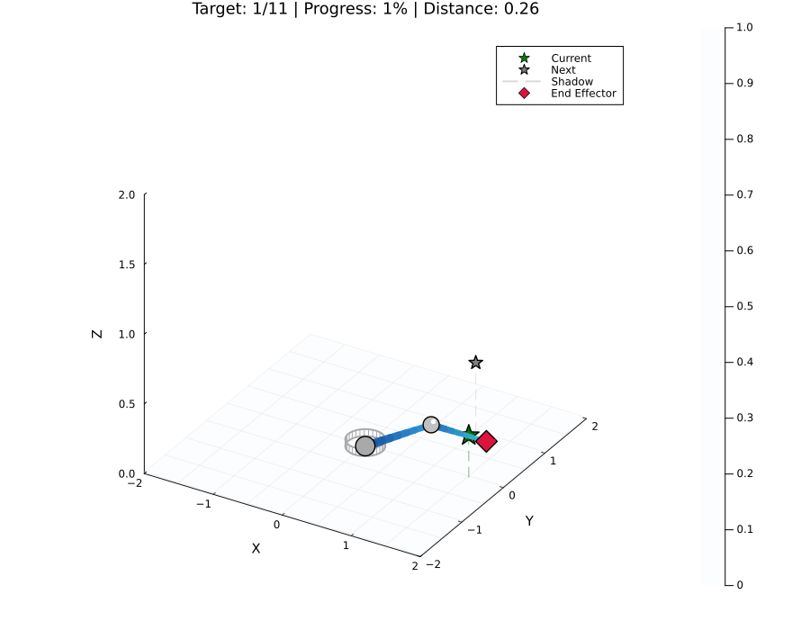

This example was automatically generated from a Jupyter notebook in the RxInferExamples.jl repository.
We welcome and encourage contributions! You can help by:
- Improving this example
- Creating new examples
- Reporting issues or bugs
- Suggesting enhancements
Visit our GitHub repository to get started. Together we can make RxInfer.jl even better! 💪
Motion Planning of Robotic Arm in Joint Space
This example demonstrates motion planning for a robotic arm using RxInfer. It's important to understand that the probabilistic inference for motion planning occurs in joint space rather than Cartesian space:
Joint Space: The space of all possible joint angles (θ₁, θ₂, θ₃, ...) of the robotic arm. Our inference model directly plans trajectories in this space, finding optimal joint angle sequences and the control torques needed to achieve them.
Cartesian Space: The 3D space (x, y, z) where the end effector operates. While our targets are specified in Cartesian space, they are translated to joint space targets using inverse kinematics before planning begins.
This approach has several advantages:
- It directly models the physical dynamics of the arm's joints
- It respects the arm's natural degrees of freedom
- It allows for more efficient inference in the space where control actually happens
The workflow is:
- Specify target positions in Cartesian space (user-friendly)
- Convert targets to joint angles using inverse kinematics
- Use RxInfer to plan optimal trajectories between joint configurations
- Visualize the resulting motion in Cartesian space using forward kinematics
Note: These examples demonstrate the use of RxInfer for motion planning for a robotic arm. The animations show the inferred trajectories from probabilistic inference, rather than simulated executions. For more realistic simulations the model would need to be extended with a reactive environment that responds to the robotic arm's actions during plan execution. If you're interested in collaborating on a more realistic implementation, please open a discussion and let's work on it together!
using RxInfer, LinearAlgebra, PlotsThe next couple of blocks are spent on defining the structures that form the foundation of our 3D robotic arm simulation. This is boring but important stuff, as we need to define the state and environment of our robotic arm before doing any inference.
Defining Structures
The structures defined below form the foundation of our 3D robotic arm simulation:
Environment: Encapsulates physical properties of the world, such as gravity, that affect the arm's dynamics. This allows us to simulate different environmental conditions.
RoboticArm3D{N}: Represents a robotic arm with N links in 3D space. The type parameter N ensures type safety and consistency across the codebase. Properties include:
- Physical dimensions (link lengths)
- Mass distribution (important for dynamics calculations)
- Torque limits (physical constraints of the motors)
The parametric type allows for compile-time optimizations and type checking.
ArmState3D: Captures the complete state of the arm at any moment, including:
- Joint angles (position)
- Joint velocities (motion)
This state representation is crucial for both forward dynamics (predicting motion) and inverse kinematics (planning motion) that we will define later.
"""
Environment(; gravitational_constant::Float64 = 9.81)
Structure containing environmental properties.
"""
Base.@kwdef struct Environment
gravitational_constant::Float64 = 9.81
end
get_gravity(env::Environment) = env.gravitational_constant
"""
RoboticArm3D(num_links, link_lengths, link_masses, joint_torque_limits)
Structure containing properties of a 3D robotic arm.
"""
Base.@kwdef struct RoboticArm3D{N}
num_links::Int64 = N # Number of links in the arm
link_lengths::Vector{Float64} # Length of each link
link_masses::Vector{Float64} # Mass of each link
joint_torque_limits::Vector{Float64} # Maximum torque for each joint
function RoboticArm3D{N}(num_links, link_lengths, link_masses, joint_torque_limits) where {N}
@assert num_links == N "Number of links must match type parameter"
@assert length(link_lengths) == N "Length of link_lengths must match number of links"
@assert length(link_masses) == N "Length of link_masses must match number of links"
@assert length(joint_torque_limits) == 2*N "Length of joint_torque_limits must match 2*number of links (2 DOF per joint)"
new{N}(num_links, link_lengths, link_masses, joint_torque_limits)
end
end
# Constructor that infers N from the number of links
function RoboticArm3D(;
num_links::Int64,
link_lengths::Vector{Float64},
link_masses::Vector{Float64},
joint_torque_limits::Vector{Float64}
)
RoboticArm3D{num_links}(num_links, link_lengths, link_masses, joint_torque_limits)
end
function get_properties(arm::RoboticArm3D{N}) where {N}
return (arm.num_links, arm.link_lengths, arm.link_masses, arm.joint_torque_limits)
end
"""
ArmState3D(joint_angles, joint_velocities)
Structure representing the state of a 3D robotic arm.
Each joint has 2 angles (pitch and yaw).
"""
struct ArmState3D
joint_angles::Vector{Float64} # Angles of each joint (2 per joint: pitch, yaw)
joint_velocities::Vector{Float64} # Angular velocities of each joint
end
function get_state(state::ArmState3D)
return (state.joint_angles, state.joint_velocities)
endget_state (generic function with 1 method)Kinematics and Dynamics: Working Together
Robotic arm control requires three complementary mathematical tools:
1. Forward Kinematics
- Purpose: Maps joint angles to end effector position in Cartesian space
- Input: Joint angles (θ₁, θ₂, θ₃, ...)
- Output: End effector position (x, y, z)
- Use cases: Visualization, collision detection, workspace analysis
- Mathematical nature: Pure geometric transformation (no physics)
2. Inverse Kinematics
- Purpose: Maps desired end effector position to required joint angles
- Input: Target position (x, y, z)
- Output: Joint angles (θ₁, θ₂, θ₃, ...) that achieve this position
- Use cases: Goal specification, target translation, user interface
- Mathematical nature: Solving geometric equations (often multiple solutions)
3. State Transition (Dynamics)
- Purpose: Models how the arm's state evolves over time when forces/torques are applied
- Input: Current state (angles, velocities) and control inputs (torques)
- Output: Next state after a time step
- Use cases: Realistic motion simulation, control design, trajectory optimization
- Mathematical nature: Physics-based differential equations (F=ma, τ=Iα)
Why We Need All Three
These components work together in a complete robotic arm system:
- Goal Translation: Inverse kinematics translates task-space goals (x,y,z positions) into joint-space goals (angles)
- Motion Generation: State transition models how to apply torques to move between joint configurations
- Feedback: Forward kinematics verifies the actual position achieved
The inference process (probabilistic planning) uses these components to determine optimal control policies:
- It uses the state transition to predict how controls affect future states
- It uses inverse kinematics to define the target joint configuration
- It uses forward kinematics to evaluate progress toward the goal
Without inverse kinematics, we couldn't translate Cartesian targets into joint angles. Without state transition, we couldn't model realistic physical motion with inertia, gravity, etc. Without forward kinematics, we couldn't visualize the arm or verify its position.
"""
forward_kinematics_3d(arm, joint_angles)
A direct geometric approach to forward kinematics for a 2-link arm.
Angles are interpreted as:
- joint_angles[1]: yaw angle of the first joint (rotation around Z axis)
- joint_angles[2]: pitch angle of the first joint (rotation around new Y axis)
- joint_angles[3]: bend angle of the second joint (in the local XZ plane)
"""
function forward_kinematics_3d(arm::RoboticArm3D{2}, joint_angles::Vector{Float64})
# Extract arm lengths
l1, l2 = arm.link_lengths
# Extract angles
yaw = joint_angles[1] # Base rotation around Z
pitch = joint_angles[2] # Shoulder pitch
bend = joint_angles[3] # Elbow bend
# Initialize positions
positions = zeros(Float64, 3, 3) # Base, shoulder, elbow
# Base position
positions[:, 1] = [0.0, 0.0, 0.0]
# First, calculate the shoulder position after yaw and pitch
# The first link points in direction [cos(yaw)*cos(pitch), sin(yaw)*cos(pitch), sin(pitch)]
shoulder_dir = [cos(yaw)*cos(pitch), sin(yaw)*cos(pitch), sin(pitch)]
positions[:, 2] = positions[:, 1] + l1 * shoulder_dir
# For the elbow, we need to bend in the plane perpendicular to the yaw rotation
# Create a coordinate system at the shoulder
z_axis = shoulder_dir # Direction of first link
y_axis = [-sin(yaw), cos(yaw), 0.0] # Perpendicular to xz-plane
x_axis = cross(y_axis, z_axis) # Complete right-handed system
# Calculate direction of second link after bend
elbow_dir = cos(bend) * z_axis + sin(bend) * x_axis
positions[:, 3] = positions[:, 2] + l2 * elbow_dir
return positions
end
"""
inverse_kinematics_3d(arm, target_position)
A direct geometric inverse kinematics solver for a 2-link arm.
"""
function inverse_kinematics_3d(arm::RoboticArm3D{2}, target_position)
# Extract arm lengths
l1, l2 = arm.link_lengths
# Extract target coordinates
x, y, z = target_position
# Calculate distance to target
dist = norm(target_position)
# Special case: if target is exactly at origin or too close to it
if dist < 0.1
# Return a safe default position slightly away from the origin
return [0.0, 0.3, 0.3, 0.0] # Small angles that position arm in a safe configuration
end
# Check if target is reachable
if dist > l1 + l2
@warn "Target is out of reach, using closest possible solution"
# Scale target to be at maximum reach
scale_factor = (l1 + l2 * 0.99) / dist
x *= scale_factor
y *= scale_factor
z *= scale_factor
# Recalculate distance
dist = norm([x, y, z])
elseif dist < abs(l1 - l2) + 0.05 # Added small margin to prevent numerical issues
@warn "Target is too close, using closest possible solution"
# Scale target to minimum reach
scale_factor = (abs(l1 - l2) * 1.05) / dist # Increased margin
x *= scale_factor
y *= scale_factor
z *= scale_factor
# Recalculate distance
dist = norm([x, y, z])
end
# Calculate yaw angle (rotation in the XY plane)
# Handle the case where both x and y are close to zero
if abs(x) < 1e-6 && abs(y) < 1e-6
yaw = 0.0 # Default yaw when target is directly above/below
else
yaw = atan(y, x)
end
# Project the target onto the plane defined by the yaw angle
# This gives us the radial distance in the direction of the yaw
r = sqrt(x^2 + y^2)
# Now we have a 2D problem in the RZ plane (where R is the radial distance)
# Apply the law of cosines to find the elbow angle
cos_elbow = (r^2 + z^2 - l1^2 - l2^2) / (2 * l1 * l2)
# Ensure the value is within valid range for acos
cos_elbow = clamp(cos_elbow, -1.0, 1.0)
elbow = acos(cos_elbow)
# Find the angle between the first link and the line to the target
# Handle case where r is very small
if r < 1e-6
if z >= 0
# Target is directly above, point straight up
pitch = π/2
else
# Target is directly below, point straight down
pitch = -π/2
end
else
cos_alpha = (l1^2 + r^2 + z^2 - l2^2) / (2 * l1 * sqrt(r^2 + z^2))
cos_alpha = clamp(cos_alpha, -1.0, 1.0)
alpha = acos(cos_alpha)
# Calculate pitch angle (elevation from XY plane)
# It's the sum of the angle to the target and alpha
pitch = atan(z, r) + alpha
end
# Return the joint angles: [yaw, pitch, elbow]
return [yaw, pitch, elbow, 0.0]
end
"""
state_transition_3d(state, action, arm, environment, dt)
State transition function for the 3D robotic arm, modeling the physics of motion.
"""
function state_transition_3d(state, action, arm, environment, dt)
# Extract state components (angles and velocities)
n = length(state) ÷ 2
θ = state[1:n]
ω = state[n+1:end]
# Extract physical parameters
g = get_gravity(environment)
num_links, link_lengths, link_masses, _ = get_properties(arm)
# Initialize next state with current values
θ_next = copy(θ)
ω_next = copy(ω)
# Apply simple physics for each joint
for i in 1:n
# Calculate acceleration: torque = I*α, so α = torque/I
# Using a simplified moment of inertia model
joint_idx = (i + 1) ÷ 2 # Convert to link index (1-indexed)
moment_of_inertia = link_masses[min(joint_idx, num_links)] * (link_lengths[min(joint_idx, num_links)]^2) / 3.0
# Net torque = control torque - friction
# Gravity compensation is already in the action
friction = 0.1 * ω[i]
net_torque = action[i] - friction
# Calculate angular acceleration
α = net_torque / moment_of_inertia
# Update velocity and position using basic Euler integration
ω_next[i] = ω[i] + α * dt
θ_next[i] = θ[i] + ω_next[i] * dt
end
# Combine angles and velocities
return vcat(θ_next, ω_next)
endMain.anonymous.state_transition_3dVisualization Functions
This is the most boring part, but it's necessary to visualize the arm and its motion. This is where forward kinematics and inverse kinematics become handy.
function plot_arm_3d!(p, arm::RoboticArm3D{2}, joint_angles; color=:black)
# Calculate positions using the kinematics
positions = forward_kinematics_3d(arm, joint_angles)
# Add a more substantial base platform
θ = range(0, 2π, length=30)
base_radius = 0.25
base_height = 0.05
# Base platform - top circle
base_x = base_radius .* cos.(θ)
base_y = base_radius .* sin.(θ)
base_z = zeros(length(θ)) .+ base_height
plot!(p, base_x, base_y, base_z, linewidth=2, color=:darkgray,
fill=true, fillcolor=:darkgray, fillalpha=0.7, label=false)
# Base platform - bottom circle
base_x_bottom = base_radius .* cos.(θ)
base_y_bottom = base_radius .* sin.(θ)
base_z_bottom = zeros(length(θ))
plot!(p, base_x_bottom, base_y_bottom, base_z_bottom, linewidth=2, color=:darkgray,
fill=true, fillcolor=:darkgray, fillalpha=0.5, label=false)
# Connect top and bottom circles to create cylinder
for i in 1:length(θ)
plot!(p, [base_x[i], base_x[i]], [base_y[i], base_y[i]], [base_z[i], base_z_bottom[i]],
linewidth=1, color=:darkgray, label=false)
end
# Plot each link of the arm with improved appearance
# Link 1: Base to shoulder - create a tapered cylinder effect
num_segments = 8
for i in 1:num_segments
t1 = (i-1)/num_segments
t2 = i/num_segments
# Interpolate positions
x1 = positions[1, 1] * (1-t1) + positions[1, 2] * t1
y1 = positions[2, 1] * (1-t1) + positions[2, 2] * t1
z1 = positions[3, 1] * (1-t1) + positions[3, 2] * t1
x2 = positions[1, 1] * (1-t2) + positions[1, 2] * t2
y2 = positions[2, 1] * (1-t2) + positions[2, 2] * t2
z2 = positions[3, 1] * (1-t2) + positions[3, 2] * t2
# Taper the width from thick to thin
width1 = 10 - (i-1) * 0.5
width2 = 10 - i * 0.5
# Gradient color from dark to light blue
color1 = RGB(0.1, 0.3 + t1*0.3, 0.6 + t1*0.3)
color2 = RGB(0.1, 0.3 + t2*0.3, 0.6 + t2*0.3)
# Draw segment
plot!(p, [x1, x2], [y1, y2], [z1, z2],
linewidth=width1, color=color1, label=false,
seriestype=:path3d, alpha=0.9)
end
# Link 2: Shoulder to end effector - create a tapered cylinder effect
for i in 1:num_segments
t1 = (i-1)/num_segments
t2 = i/num_segments
# Interpolate positions
x1 = positions[1, 2] * (1-t1) + positions[1, 3] * t1
y1 = positions[2, 2] * (1-t1) + positions[2, 3] * t1
z1 = positions[3, 2] * (1-t1) + positions[3, 3] * t1
x2 = positions[1, 2] * (1-t2) + positions[1, 3] * t2
y2 = positions[2, 2] * (1-t2) + positions[2, 3] * t2
z2 = positions[3, 2] * (1-t2) + positions[3, 3] * t2
# Taper the width from thick to thin
width1 = 8 - (i-1) * 0.5
width2 = 8 - i * 0.5
# Gradient color from medium to light blue
color1 = RGB(0.1, 0.4 + t1*0.4, 0.7 + t1*0.2)
color2 = RGB(0.1, 0.4 + t2*0.4, 0.7 + t2*0.2)
# Draw segment
plot!(p, [x1, x2], [y1, y2], [z1, z2],
linewidth=width1, color=color1, label=false,
seriestype=:path3d, alpha=0.9)
end
# Add joint spheres with metallic appearance
# Base joint
scatter!(p, [positions[1, 1]], [positions[2, 1]], [positions[3, 1]],
markersize=12, color=:darkgray, markerstrokewidth=1,
markerstrokecolor=:black, label=false)
# Middle joint (shoulder) with highlight effect
scatter!(p, [positions[1, 2]], [positions[2, 2]], [positions[3, 2]],
markersize=10, color=:silver, markerstrokewidth=1,
markerstrokecolor=:black, label=false)
# Add highlight to middle joint
scatter!(p, [positions[1, 2] + 0.02], [positions[2, 2] + 0.02], [positions[3, 2] + 0.02],
markersize=3, color=:white, markerstrokewidth=0,
label=false)
# Plot end effector with a more interesting shape
# Main part
scatter!(p, [positions[1, 3]], [positions[2, 3]], [positions[3, 3]],
markersize=12, markershape=:diamond, color=:crimson,
markerstrokewidth=1, markerstrokecolor=:black, label="End Effector")
# Add "gripper" effect to end effector
gripper_length = 0.1
gripper_angle1 = atan(positions[2, 3] - positions[2, 2], positions[1, 3] - positions[1, 2])
gripper_angle2 = gripper_angle1 + π/2
# Gripper part 1
plot!(p, [positions[1, 3], positions[1, 3] + gripper_length * cos(gripper_angle1 + π/4)],
[positions[2, 3], positions[2, 3] + gripper_length * sin(gripper_angle1 + π/4)],
[positions[3, 3], positions[3, 3]],
linewidth=3, color=:crimson, label=false)
# Gripper part 2
plot!(p, [positions[1, 3], positions[1, 3] + gripper_length * cos(gripper_angle1 - π/4)],
[positions[2, 3], positions[2, 3] + gripper_length * sin(gripper_angle1 - π/4)],
[positions[3, 3], positions[3, 3]],
linewidth=3, color=:crimson, label=false)
return p
end
function visualize_arm_and_target(arm::RoboticArm3D{N}, joint_angles, target_position) where {N}
# Calculate positions using forward kinematics
positions = forward_kinematics_3d(arm, joint_angles)
# Create plot
p = plot(
title="3D Robotic Arm Visualization",
xlabel="X", ylabel="Y", zlabel="Z",
xlim=(-2, 2), ylim=(-2, 2), zlim=(-2, 2),
aspect_ratio=:equal,
legend=:topright
)
# Plot the arm
for i in 1:arm.num_links
plot!(p, [positions[1, i], positions[1, i+1]],
[positions[2, i], positions[2, i+1]],
[positions[3, i], positions[3, i+1]],
linewidth=3, color=:blue, label=(i==1 ? "Arm" : false))
scatter!(p, [positions[1, i]], [positions[2, i]], [positions[3, i]],
markersize=5, color=:black, label=(i==1 ? "Joints" : false))
end
# Plot end effector
scatter!(p, [positions[1, end]], [positions[2, end]], [positions[3, end]],
markersize=6, color=:red, label="End Effector")
# Plot target
scatter!(p, [target_position[1]], [target_position[2]], [target_position[3]],
markersize=6, markershape=:star, color=:green, label="Target")
# Plot base
scatter!(p, [0], [0], [0], markersize=8, color=:black, label="Base")
# Calculate error
error = norm(positions[:, end] - target_position)
annotate!(p, 0, 0, 2, text("Error: $(round(error, digits=4))", 10, :black))
return p, positions, error
end
"""
animate_sequential_targets_3d(arm, all_states, all_targets)
Animate the arm's motion through a sequence of targets.
"""
function animate_sequential_targets_3d(arm::RoboticArm3D{N}, all_states::Vector, all_targets::Vector) where {N}
num_targets = length(all_targets)
# Combine all trajectory segments into one continuous path
combined_states = hcat(all_states...)
total_frames = size(combined_states, 2)
# Calculate the frame indices where we reach each target
target_reached_frames = zeros(Int, num_targets)
frame_count = 0
for i in 1:num_targets
frame_count += size(all_states[i], 2)
target_reached_frames[i] = frame_count
end
animation = @animate for k in 1:total_frames
# Determine which target we're currently moving towards
current_target_idx = 1
for i in 1:num_targets
if k <= target_reached_frames[i]
current_target_idx = i
break
end
end
# Get the current joint angles
joint_angles = combined_states[:, k]
# Calculate camera angle that slowly rotates for better 3D perception
camera_angle_x = 30 + 20*sin(k/total_frames*2π)
camera_angle_y = 20 + 10*cos(k/total_frames*2π)
# Calculate the current end effector position using the kinematics
positions = forward_kinematics_3d(arm, joint_angles)
current_pos = positions[:, 3]
# Calculate distance to current target
distance = norm(current_pos - all_targets[current_target_idx])
# Calculate overall progress
overall_progress = k / total_frames
# Create a 3D plot with improved styling
p = plot(
xlabel="X", ylabel="Y", zlabel="Z",
xlim=(-2, 2), ylim=(-2, 2), zlim=(0, 2),
title="Target: $current_target_idx/$num_targets | Progress: $(round(Int, overall_progress*100))% | Distance: $(round(distance, digits=2))",
legend=:topright, size=(900, 700),
camera=(camera_angle_x, camera_angle_y),
grid=false, # Remove grid for cleaner look
aspect_ratio=:equal,
background_color=:white,
foreground_color=:black,
guidefontsize=10,
titlefontsize=12
)
# Add a more interesting ground plane with grid pattern
x_grid = range(-2, 2, length=20)
y_grid = range(-2, 2, length=20)
z_grid = zeros(length(x_grid), length(y_grid))
surface!(p, x_grid, y_grid, z_grid, color=:aliceblue, alpha=0.2, label=false)
# Add grid lines on the ground for better depth perception
for x in range(-2, 2, step=0.5)
plot!(p, [x, x], [-2, 2], [0.01, 0.01], color=:lightgray, linewidth=1, label=false, alpha=0.3)
end
for y in range(-2, 2, step=0.5)
plot!(p, [-2, 2], [y, y], [0.01, 0.01], color=:lightgray, linewidth=1, label=false, alpha=0.3)
end
# Plot targets with improved styling
for (i, target) in enumerate(all_targets)
if i < current_target_idx
# Completed targets - we've already reached these
scatter!(p, [target[1]], [target[2]], [target[3]],
markersize=8, color=:darkgreen, markershape=:circle,
label=(i==1 ? "Completed" : false))
# Add a small vertical line connecting target to ground
plot!(p, [target[1], target[1]], [target[2], target[2]], [0, target[3]],
linewidth=1, color=:darkgreen, linestyle=:dash, alpha=0.3, label=false)
elseif i == current_target_idx
# Current target with a glowing effect
scatter!(p, [target[1]], [target[2]], [target[3]],
markersize=12, color=:green, markershape=:star,
label="Current")
# Add a pulsing effect based on frame number
pulse_size = 6 + 3*sin(k/10)
scatter!(p, [target[1]], [target[2]], [target[3]],
markersize=pulse_size, color=:green, markershape=:circle,
alpha=0.3, label=false)
# Add a vertical line connecting target to ground
plot!(p, [target[1], target[1]], [target[2], target[2]], [0, target[3]],
linewidth=1, color=:green, linestyle=:dash, alpha=0.5, label=false)
elseif i == current_target_idx + 1
# Only show the next target
scatter!(p, [target[1]], [target[2]], [target[3]],
markersize=8, color=:gray, markershape=:star,
label="Next")
# Add a faint vertical line
plot!(p, [target[1], target[1]], [target[2], target[2]], [0, target[3]],
linewidth=1, color=:gray, linestyle=:dash, alpha=0.2, label=false)
end
end
# Add a trail of the end effector's path
if k > 1
# Get positions from previous frames to create a trail
trail_length = min(k-1, 15) # Shorter trail for less clutter
trail_indices = max(1, k-trail_length):k-1
# Extract end effector positions for each frame in the trail
trail_positions = []
for idx in trail_indices
trail_joint_angles = combined_states[:, idx]
trail_pos = forward_kinematics_3d(arm, trail_joint_angles)[:, 3]
push!(trail_positions, trail_pos)
end
# Extract coordinates for the trail
trail_x = [pos[1] for pos in trail_positions]
trail_y = [pos[2] for pos in trail_positions]
trail_z = [pos[3] for pos in trail_positions]
# Plot the trail with a gradient effect
if length(trail_x) > 1
for i in 1:length(trail_x)-1
# Gradient color from orange to transparent
alpha_val = 0.2 + 0.7 * i / length(trail_x)
plot!(p, [trail_x[i], trail_x[i+1]],
[trail_y[i], trail_y[i+1]],
[trail_z[i], trail_z[i+1]],
linewidth=2 + i/3, color=:orange, linestyle=:solid,
label=false, alpha=alpha_val)
end
end
end
# For visual reference, add a shadow of the arm on the XZ plane
for i in 1:size(positions, 2)-1
plot!(p, [positions[1, i], positions[1, i+1]],
[0, 0], # Fix Y coordinate to 0 (XZ plane)
[positions[3, i], positions[3, i+1]],
linewidth=2, color=:gray, linestyle=:dash,
label=(i==1 ? "Shadow" : false), opacity=0.3)
end
# Plot the arm with enhanced appearance
plot_arm_3d!(p, arm, joint_angles)
end
gif(animation, "sequential_targets_3d.gif", fps=15, show_msg = false)
return nothing
endMain.anonymous.animate_sequential_targets_3dModel specification
@model function robotic_arm_3d_model(arm, environment, initial_state, goal, horizon, dt)
# Extract properties
g = get_gravity(environment)
num_links, _, link_masses, _ = get_properties(arm)
# Initial state prior
s[1] ~ MvNormal(mean = initial_state, covariance = 1e-5 * I)
for i in 1:horizon
# Prior on torques - compensate for gravity at each joint
# For 3D arm: first joint (yaw) not affected by gravity,
# pitch joints affected based on angle
gravity_compensation = zeros(2*num_links)
for j in 1:num_links
if j > 1 # Skip first joint (base yaw)
gravity_compensation[2*j-1] = link_masses[j] * g * 0.5 # Pitch compensation
end
end
u[i] ~ MvNormal(μ = gravity_compensation, Σ = diageye(2*num_links))
# State transition
s[i + 1] ~ MvNormal(
μ = state_transition_3d(s[i], u[i], arm, environment, dt),
Σ = 1e-10 * I
)
end
# Final state constraint
s[end] ~ MvNormal(mean = goal, covariance = 1e-5 * diageye(4*num_links))
end
@meta function robotic_arm_meta()
# Approximate the state transition
state_transition_3d() -> Unscented()
endrobotic_arm_meta (generic function with 1 method)Integration Possibilities
While this example keeps kinematics separate from the probabilistic model, it's theoretically possible to integrate them directly:
- Embedded Forward Kinematics: The model could include forward kinematics as part of its structure, allowing direct optimization in Cartesian space
- Embedded Inverse Kinematics: The inference process could solve inverse kinematics simultaneously with trajectory optimization
For example, we could define a model that directly optimizes for reaching a Cartesian target:
@model function direct_cartesian_model(arm, environment, initial_state, target_position, horizon, dt)
# Initial state prior
s[1] ~ MvNormal(mean = initial_state, covariance = 1e-5 * I)
for i in 1:horizon
# Control priors
u[i] ~ MvNormal(μ = zeros(num_controls), Σ = diageye(num_controls))
# State transition
s[i + 1] ~ MvNormal(
μ = state_transition(s[i], u[i], arm, environment, dt),
Σ = 1e-10 * I
)
# Calculate end effector position using forward kinematics
ee_pos[i] := forward_kinematics(arm, s[i][1:num_joints])
end
# Final position constraint directly in Cartesian space
ee_pos[horizon] ~ MvNormal(mean = target_position, covariance = 1e-5 * I)
endThis approach would eliminate the need for separate inverse kinematics calculations but would make the inference problem more complex. For clarity and computational efficiency, this example keeps these components separate.
Motion Planning
"""
move_to_target_3d(arm, env, start, target_position, horizon, dt)
Plan motion to reach a target position in 3D space using the RxInfer model.
"""
function move_to_target_3d(arm::RoboticArm3D{N}, env::Environment, start::ArmState3D, target_position, horizon, dt) where {N}
# Convert ArmState3D to state vector
initial_state = vcat(start.joint_angles, start.joint_velocities)
# Calculate target joint angles that would reach the target position
target_joint_angles = inverse_kinematics_3d(arm, target_position)
# Create goal state (target angles and zero velocities)
goal_state = vcat(target_joint_angles, zeros(length(target_joint_angles)))
# Create and run the inference using the correct API structure
results = infer(
model = robotic_arm_3d_model(
arm = arm,
environment = env,
horizon = horizon,
dt = dt
),
data = (
initial_state = initial_state,
goal = goal_state,
),
meta = robotic_arm_meta(),
returnvars = (s = KeepLast(), u = KeepLast())
)
# Extract trajectories - FIXED to handle MvNormalWeightedMeanPrecision
states_distributions = results.posteriors[:s]
controls_distributions = results.posteriors[:u]
# Extract means from the distributions
states = [mean(dist) for dist in states_distributions]
controls = [mean(dist) for dist in controls_distributions]
# Convert to joint angles and velocities
n = length(states[1]) ÷ 2
joint_angles = [state[1:n] for state in states]
joint_velocities = [state[n+1:end] for state in states]
return joint_angles, joint_velocities, controls
end
"""
run_3d_example()
Run a complete example of 3D motion planning for a robotic arm.
"""
function run_3d_example()
# Create a 2-link 3D robotic arm
arm = RoboticArm3D{2}(
num_links = 2, # 2-link arm
link_lengths = [1.0, 0.8], # Lengths of links
link_masses = [0.5, 0.3], # Masses of links
joint_torque_limits = [5.0, 5.0, 3.0, 3.0] # Maximum torques (2 per joint)
)
# Create an environment
env = Environment(gravitational_constant = 9.81)
# Define an expanded sequence of targets with more points
# Avoid the origin (0,0,0) which causes issues
targets = [
[1.5, 0.0, 0.3], # Forward
[1.0, 1.0, 0.5], # Forward-right and up
[0.0, 1.5, 0.3], # Right
[-0.5, 1.0, 0.0], # Back-right and down
[-1.0, 0.5, 0.8], # Back and up
[-1.0, -0.5, 0.4], # Back-left and mid-height
[-0.5, -1.0, 0.0], # Back-left and down
[0.0, -1.5, 0.3], # Left
[0.8, -0.8, 0.3], # Forward-left
[0.5, 0.0, 1.5], # Forward and up
[0.2, 0.2, 0.3] # Near home position but not at origin
]
# Parameters for motion planning
horizon = 10 # Keep horizon at 10 as requested
dt = 0.1 # Time step
# Initialize the arm state (all zeros)
initial_state = ArmState3D(
[0.0, 0.3, 0.3, 0.0], # Start with a slight bend rather than all zeros
zeros(4) # Joint velocities
)
# Store the states, controls, and targets for later visualization
all_states = []
all_controls = []
current_state = initial_state
# Plan motion for each target
for (i, target) in enumerate(targets)
println("\nPlanning motion to target $i: $target")
# Plan motion to the target
θ_trajectory, ω_trajectory, u_trajectory = move_to_target_3d(arm, env, current_state, target, horizon, dt)
# Combine all states into a single matrix for visualization
states_matrix = hcat(θ_trajectory...)
# Update the current state for the next target
current_state = ArmState3D(
θ_trajectory[end],
ω_trajectory[end]
)
# Store the results
push!(all_states, states_matrix)
push!(all_controls, hcat(u_trajectory...))
end
# Animate the motion through all targets
animation = animate_sequential_targets_3d(arm, all_states, targets)
return arm, all_states, targets, all_controls
endMain.anonymous.run_3d_examplearm, states, targets, controls = run_3d_example();Planning motion to target 1: [1.5, 0.0, 0.3]
Planning motion to target 2: [1.0, 1.0, 0.5]
Planning motion to target 3: [0.0, 1.5, 0.3]
Planning motion to target 4: [-0.5, 1.0, 0.0]
Planning motion to target 5: [-1.0, 0.5, 0.8]
Planning motion to target 6: [-1.0, -0.5, 0.4]
Planning motion to target 7: [-0.5, -1.0, 0.0]
Planning motion to target 8: [0.0, -1.5, 0.3]
Planning motion to target 9: [0.8, -0.8, 0.3]
Planning motion to target 10: [0.5, 0.0, 1.5]
Planning motion to target 11: [0.2, 0.2, 0.3]
This example was automatically generated from a Jupyter notebook in the RxInferExamples.jl repository.
We welcome and encourage contributions! You can help by:
- Improving this example
- Creating new examples
- Reporting issues or bugs
- Suggesting enhancements
Visit our GitHub repository to get started. Together we can make RxInfer.jl even better! 💪
This example was executed in a clean, isolated environment. Below are the exact package versions used:
For reproducibility:
- Use the same package versions when running locally
- Report any issues with package compatibility
Status `~/work/RxInferExamples.jl/RxInferExamples.jl/docs/src/categories/advanced_examples/robotic_arm/Project.toml`
[91a5bcdd] Plots v1.40.9
[86711068] RxInfer v4.2.0
[90137ffa] StaticArrays v1.9.13